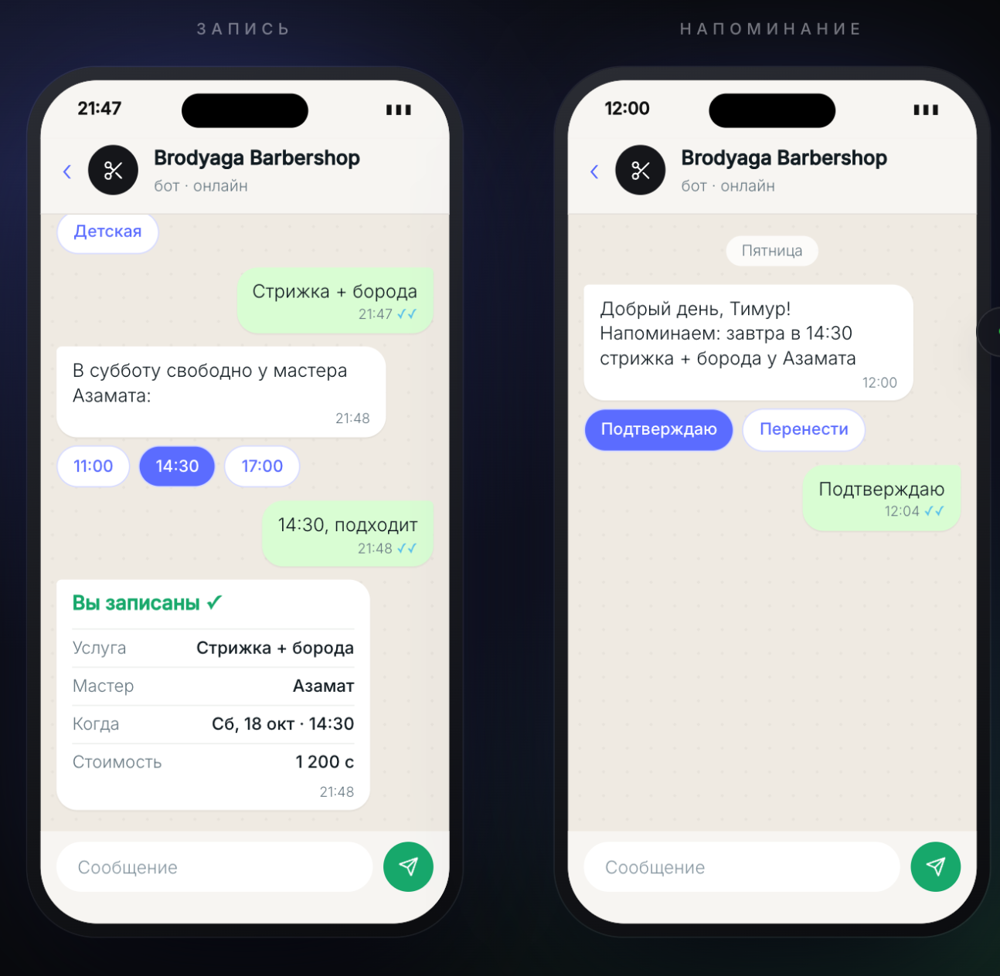
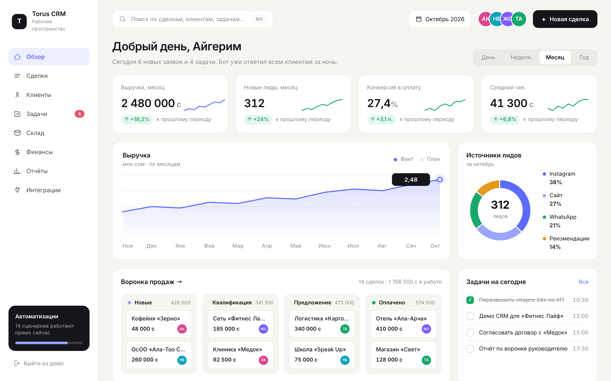
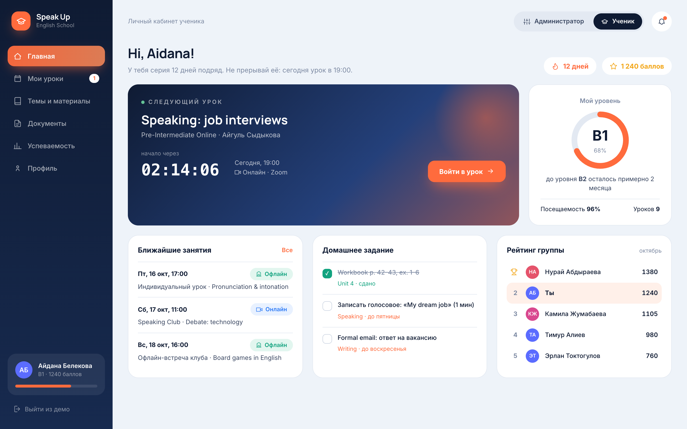
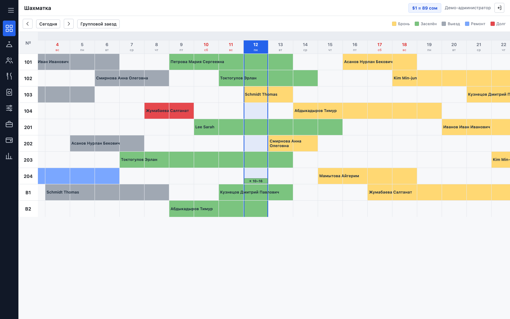
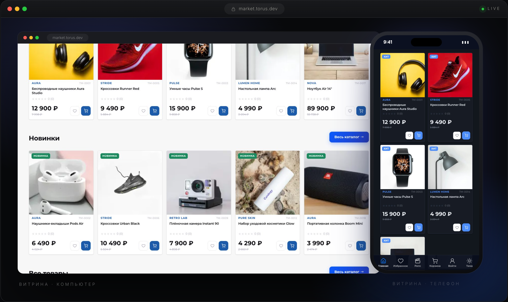
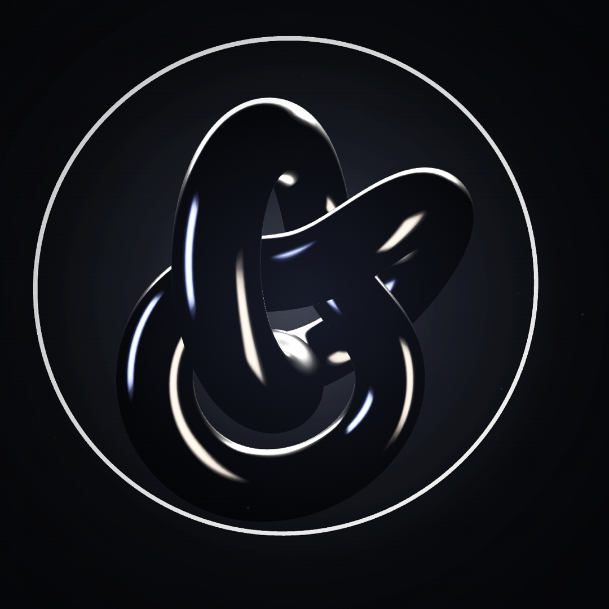

TORUS
23:40
▮▮▮
Клиенты
3 новых сообщения
Здравствуйте! Можно записаться на завтра?
23:38
Вы работаете в субботу?
23:39
Сколько стоит? Ответьте, пожалуйста
23:40
Клиенты пишут вам
в 23:40?
TORUS
09:15
▮▮▮
Клиенты
был(а) давно
Здравствуйте! Можно записаться на завтра?
23:38
Вы работаете в субботу?
23:39
Сколько стоит? Ответьте, пожалуйста
23:40
Доброе утро! Да, конечно
09:15
А утром клиент уже
у конкурентов
TORUS
Чат-бот

Бот сам отвечает,
записывает и напоминает.
Даже ночью.
TORUS
CRM

Заявки, клиенты и оплаты —
в одной системе
TORUS

Школы и курсы

Гостиницы

Салоны и магазины
Для школ, гостиниц,
салонов и магазинов
Под вашу задачу,
а не по шаблону

Студия Torus
Разберём вашу задачу
Ссылка в шапке профиля